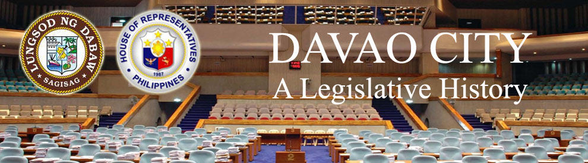

| History |
| Legislators |
| Laws |
| About |
 |
| PROSPERO C. NOGRALES |
Speaker Prospero C. Nograles is the first member of the House of Representatives from Mindanao to become the Speaker after the House celebrated its first centennial anniversary.
Speaker Nograles was elected member of the House of Representatives in his first term in the 8th Congress (1989-1992) to represent the first Congressional District of Davao City. He was not reelected as member to the 9th (1992-1995) and 11th (1998-2001) Congresses. He was, though, a member in the 10th Congress (1995-1998) and in the 12th (2001-2004), 13th (2004-2008) and 14th (2008-2010) Congresses.
In the 13th Congress, he was elected as the Majority Floor Leader and in the 14th Congress as the Speaker.
Before entering government service, he practiced his law profession and was also a professor of law in different schools and universities in Davao City. He was also deeply involved in socio-civic activities in Davao such that he was chosen as one of the Ten Outstanding Young Men of the Philippine (TOYM) for law and human rights. He was also an active member of the Rotary Club, West Davao from 1975-1979 and was a presidential awardee in 1977 and 1978.
He entered politics when he became a member of the Corazon Aquino for President Movement. Likewise, he became the Executive Assistant to the President and Deputy General Counsel in the University of the Philippines. He also became a member and Governor of the Integrated Bar of the Philippines, Davao City and Davao del Sur Chapter.
Speaker Nograles was born on October 30, 1947 to Erico Nograles and Vicenta Castillo from Batangas.
He obtained his elementary and secondary education in Ateneo de Davao University and his Bachelor of Arts and Law degree from the Ateneo de Manila University. A very diligent student, he passed the Bar examinations in 1971, with flying colors, placing second among the Top Ten Bar topnotchers with the grade of 90.95%.
Speaker Nograles is married to Rhodora Bendigo, owner of the Heritage Art Gallery at SM Megamall, Mandaluyong City. They have four children: Kristine Elizabeth, Karlo Alexei, Jericho Jonas, and Margarita Ignacia.
In 2005, he was conferred the Doctor of Law degree, Honoris causa, by the University of Mindanao, his Alma Mater.
Before his election as Speaker, he was the head of the House of Representatives panel in the Commission on Appointments.
Congressional Library Bureau
Legislative Library Service